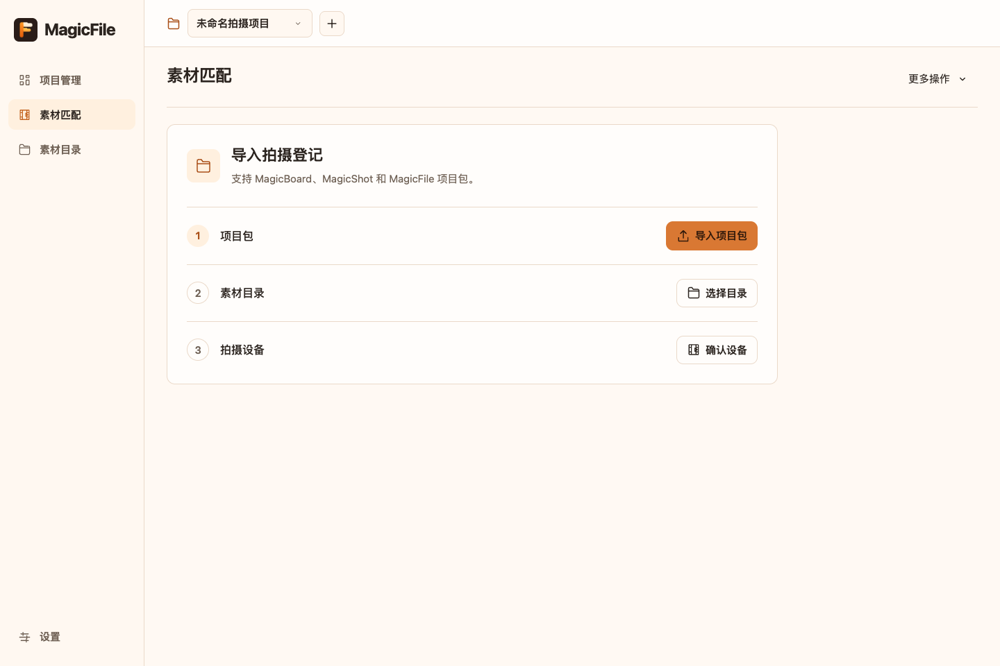

登记编号
原始视频
编号与素材，一一对应。
自动统一编号大小写，按设备匹配素材。遇到重号，保留候选供你确认。

自动统一编号大小写，按设备匹配素材。遇到重号，保留候选供你确认。
跨日期扫描所有子目录，新增素材后可再次识别。
自动提取第一帧，随时查看、清理或重建缓存。
导入 MagicShot 或 MagicBoard 的拍摄记录。
设置设备简称，选择素材文件夹。
查看首帧、确认对应，导出含图片的回传包。
将回传包手动导入 MagicBoard 1.0.28 或兼容新版，或 MagicShot 手机接收预览版。手机接收功能尚未发布到微信正式版，旧版接收端不支持此包。
安装包中的应用名为 MagicFile.app。下载解压后，将 MagicFile.app 拖到「应用程序」，双击打开。软件会在浏览器中打开本机工作台，无需安装 Node.js 或媒体工具。支持 macOS 13.5 及以上。
当前应用尚未进行 Apple 签名公证。尝试打开后，前往「系统设置 → 隐私与安全性」，找到 MagicFile 提示并选择「仍要打开」。请使用此官网提供的安装包。
升级前运行旧下载包中的「停止 MagicFile.command」，再替换应用。项目保存在 ~/Library/Application Support/MagicFile/data/，不要删除此目录。备份时先停止服务，再复制整个 data 文件夹。
在项目管理中删除项目，或在「设置 → 首帧缓存」中查看路径、清理和重建首帧。删除项目不会删除原视频；仅清理缓存时，登记记录、人工关联与已导出的文件也会保留。
浏览器是本机软件的操作窗口，关闭页面不会停止本地服务。任务完成后，运行安装包附带的「停止 MagicFile.command」即可结束服务。
下载 SHA-256 校验文件，核对安装包。也可以查看当前版本清单。
58da00f813b996f7577c029636e6df6f58a476599a80907ec93489f86ffd3678v0.6.2 · 160 MB · Apple 芯片 / Intel